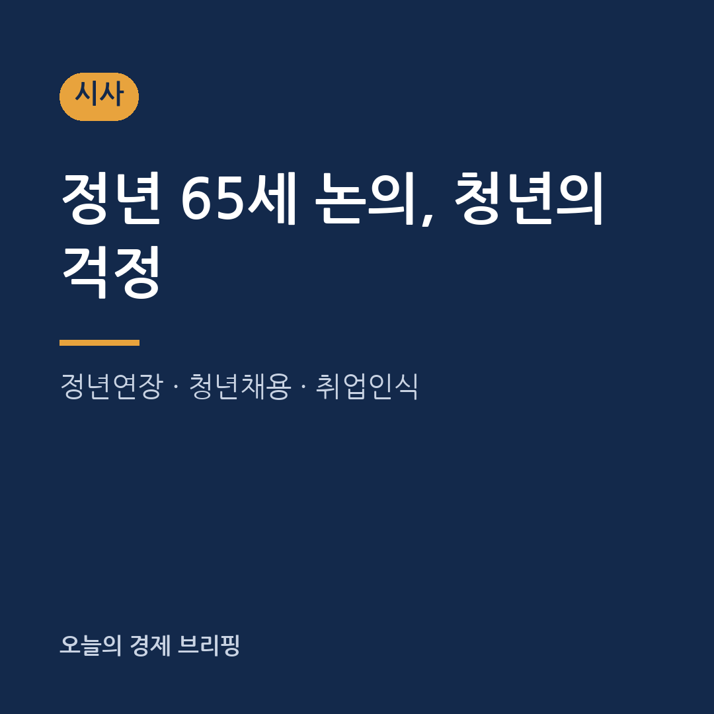
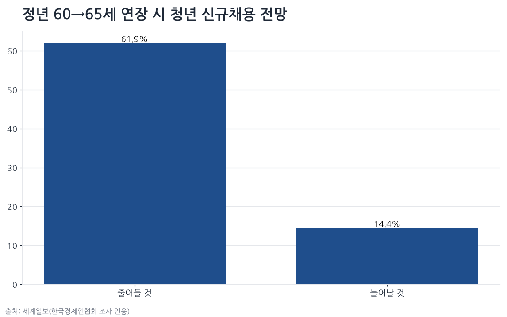

2026-11-24-1136-naver 발행 키트 · 이 페이지는 검색에 노출되지 않습니다.
제목
카테고리
시사태그
본문 (그림·표 포함)
휴대폰 블로그 앱에서는 그림이 같이 붙지 않을 수 있어요. 그때는 [글자만 복사] 후 아래 이미지를 저장해 [그래프1]·[표1] 자리에 첨부하세요.

요즘 부모님이나 직장 선배와 "정년이 늘어난다는데 진짜일까?" 하는 이야기 한 번쯤 나눠 보셨죠? 반대로 취업을 준비하는 가족이 있다면 마음이 복잡하실 수도 있어요.
오늘은 법정 정년을 65세로 늘리는 입법 논의와, 이를 바라보는 대학생들의 속마음을 정리해 봤어요.
▶ 지금 어디까지 왔나요?
법정 정년은 회사가 정할 수 있는 정년의 최저선을 법으로 못 박은 나이예요. 지금은 60세인데, 이걸 65세로 올리는 방안이 논의되고 있어요.
고용노동부 장관은 이 입법을 올해 안에 처리하겠다는 뜻을 밝혔어요. 여당인 더불어민주당 정년연장특별위원회의 소위원회도 11월 27일에 열릴 예정이라고 해요.
아직 법안이 확정된 건 아니라서, 어떤 방식으로 얼마나 단계적으로 늘릴지는 앞으로 논의 내용을 지켜봐야 해요.
정년연장 논의 한눈에 정리
| 항목 | 내용 |
|---|---|
| 쟁점 | 법정 정년 60세에서 65세로 연장 |
| 정부 입장 | 올해 안 입법 추진 의지 표명 |
| 다음 일정 | 11월 27일 민주당 정년연장특위 소위원회 예정 |
| 설문 대상 | 대학생·졸업자 등 2,489명(한경협) |
출처: 세계일보
▶ 대학생 10명 중 6명은 "채용 줄 것 같다"
한국경제인협회가 11월 22일 공개한 대학생 취업인식조사가 눈에 띄어요. 전국 4년제 대학 재학생과 졸업자 등 2,489명이 답했다고 해요.
정년이 60세에서 65세로 늘면 청년 신규채용이 줄어들 것 같다고 답한 사람이 61.9%였어요. 반대로 채용 기회가 늘 것 같다는 답은 14.4%에 그쳤고요.
기업 입장에서는 일하는 기간이 길어진 사람이 많아지면 새로 뽑을 자리가 줄 수 있다고 걱정하는 거예요. 물론 실제로 그렇게 될지는 법 내용과 기업 대응에 달려 있어서, 이 숫자는 어디까지나 체감 전망이에요.

▶ 취업 현장 숫자도 같이 볼까요?
같은 조사에서 적극적으로 구직 활동을 하는 사람들은 평균 10.2곳에 지원했어요. 서류 합격률은 18.6%로, 지난해 19.4%보다 조금 낮아졌어요.
지원한 모든 곳에서 서류 탈락을 경험한 비율은 23.5%로 지난해 19.1%보다 높아졌어요. 취업 과정에서 가장 힘든 점으로는 일자리 부족을 꼽은 응답이 51.8%로 가장 많았어요.
정년연장 걱정이 커 보이는 배경에는 이런 체감 어려움이 깔려 있다고 볼 수 있어요.
▶ 우리 집엔 어떤 영향이 있을까요?
직장에 다니는 가족이 있다면 정년이 늘어 소득이 이어지는 기간이 길어질 수 있어요. 국민연금을 받기 전 소득 공백을 걱정하던 분들께는 반가운 소식일 수 있고요.
반면 취업을 준비하는 가족이 있다면 신규채용 규모가 어떻게 달라질지 신경 쓰이실 거예요. 한쪽만 좋거나 나쁜 문제가 아니라서, 세대별 입장을 같이 보는 게 중요해요.
▶ 이런 건 꼭 확인해 보세요
첫째, 법안에 정년을 몇 년에 걸쳐 단계적으로 늘리는지 담기는지 확인해 보세요.
둘째, 우리 회사나 가족 회사의 임금체계와 인사 제도에 대한 안내가 나오는지 살펴보세요.
셋째, 정년과는 별개로 은퇴 이후 일자리 제도도 있어요. 충북 영동군에서는 내년 어르신 일자리와 사회활동 지원사업에 함께할 분들의 신청을 12월 11일까지 받는다고 해요. 다른 지역에 사신다면 거주지 시·군·구청이나 주민센터에서 비슷한 사업이 있는지 알아보세요.
▶ 한 줄 정리
정년 65세 입법은 올해 안 처리 의지가 나온 상태이고, 대학생들은 신규채용 감소를 걱정하고 있어요. 여러분은 정년연장과 청년 일자리, 어느 쪽 이야기가 더 와닿으셨나요? 댓글로 생각을 들려주세요.
출처 (본문 맨 아래에 붙여넣기 권장)
- 세계일보, 대학생 10명 중 6명 “정년연장, 청년 신규채용 줄 것”, https://www.segye.com/newsView/20261124504055 - 연합뉴스, [영동소식] 내년 노인 일자리·사회활동 참여자 모집, https://www.yna.co.kr/view/AKR20261124060200064